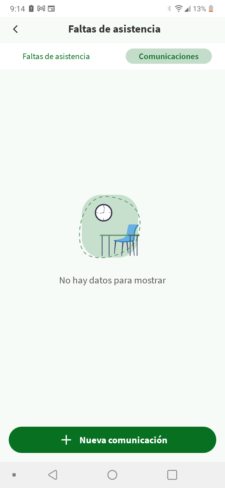

VOCES DEL FUTURO: MUJERES EN LA ROBÓTICA DIG 4º ESO
2.1. Vuestra app favorita
Realizad los ejercicios que vienen a continuación para poder completar esta actividad.
Antes de todo hay que formar un grupo. Después, el grupo al completo tiene que elegir una app cualquiera para que tratéis de ver si conseguís hacer dos cosas:
Sacar una lista de los diferentes elementos que estén presentes en esa app móvil.
Explicar cómo actúan esos elementos para cumplir su función.
Pero ¡vamos por partes!
1. ¿Qué app vais a elegir?
Recordad que tenéis que formar un grupo de tres personas (máximo cuatro).
Lo primero que tenéis que hacer es pensar en la app que más utilizáis, la que más os gusta, la más famosa, la que deseáis tener o, en definitiva, la que queráis.
Eso sí, sería conveniente que la conozcáis lo suficiente, dado que la vais a analizar.
A continuación, habría que explicar brevemente en vuestro cuaderno:
¿Por qué la habéis elegido?
¿Para qué sirve?
2. ¡Qué de cosas tiene una app!
Vais a seguir trabajando en grupo para completar este ejercicio (recordad que debéis ser tres, máximo cuatro).
Una vez que tengáis la app elegida, fijaros en cualquiera de sus pantallas para hacer lo que se pide en cada una de las pestañas siguientes:
Análisis de contenidos
En primer lugar, habría que analizar qué contenidos se muestran en esa pantalla de la aplicación elegida.
Observad detenidamente los contenidos de la pantalla y escribid vuestras conclusiones en el cuaderno.
Lista de elementos
A continuación, hay que sacar una lista de todos los elementos que aparecen en la pantalla elegida.
Escribid esa lista cada uno en vuestro cuaderno.
Función de los elementos
Después, sería conveniente que intentéis describir qué función cumplen los elementos que hayáis encontrado, es decir:
¿Para qué están ahí colocados?
¿Qué hacen?
¿Qué relaciones tienen con otros elementos?
Escribid las repuestas cada uno en vuestro cuaderno.
Lumen dice ¿Tienes claro lo que hay que hacer?
¿Os lo explico mejor?
Por si todavía hay dudas acerca de qué es eso del contenido y de los elementos de una pantalla, habría que aclarar que se refiere a lo siguiente:
Qué información se transmite en esa pantalla (tanto audiovisual como escrita)
Qué componentes deben estar presentes en la pantalla (como botones, imágenes, textos, menús…) para transmitir esa información y/o manejar la app.
¿Necesitáis un ejemplo?
Para que sepas exactamente que hay que hacer, aquí tenéis un ejemplo completamente resuelto.
Lo primero es escoger una pantalla de una app.
En este caso la app es la de “iPasen” (que ya debéis conocer) y la pantalla concreta que hay que analizar es la de “Faltas de asistencia”.
A continuación podéis ver una captura de pantalla del móvil que sirve de referencia para explicar todo lo demás que pide el ejercicio.

INFORMACIÓN
Un título para la pantalla indicativo de su función
Fechas y tramos en los que se producen las faltas de asistencia o, en caso de que no haya faltas, una frase que Informe sobre la falta de datos acompañada de una imagen relacionada con la ausencia/presencia en clase (como ocurre en este caso concreto).
COMPONENTES
Pantalla
Etiquetas con texto
Botones
Imagen
Posiciones de cada elemento
Al fijarse en la pantalla que se está analizando se puede observar que hay elementos genéricos que no pertenecen a la app y que definen el área disponible para situar los componentes.
Arriba está la barra de estado del móvil que comunica la hora, la batería…
Abajo están los botones de Android para volver y gestionar la comunicación con el resto de apps instaladas.
Entre ambos, está el área disponible que se ha configurado con una cabecera bajo la que se sitúan las opciones disponibles colocadas en torno a un espacio central que mostrará la información de faltas, poniendo de esta manera el foco de atención sobre el objetivo principal de la pantalla.
FUNCIONES Y RELACIONES
Etiqueta para mostrar el título de la pantalla.
Botón para cerrar pantalla y volver a la anterior.
Botón que comunica esta pantalla con la de “Faltas de asistencia”.
Botón para acceder a la pantalla “Comunicaciones”.
Imagen no interactiva para mostrar información gráfica.
Etiqueta para mostrar texto que acompañe a la imagen.
Botón para conectar con otra pantalla que permita crear y enviar una comunicación de falta.
3. Tus ideas y las de los demás
Finalmente, para acabar la actividad, entre toda la clase, vais a poner en común vuestro trabajo.
Es muy posible que en cada grupo hayan salido distintos componentes que realizan diversas funciones y sería aconsejable que los conocierais todos.
Ampliad la lista
Debéis ampliar la lista que creasteis anteriormente añadiendo los nuevos elementos que vayan apareciendo en la puesta en común.
Añadid las funciones
También es preciso que a cada nuevo elemento le asociéis la función que tiene.